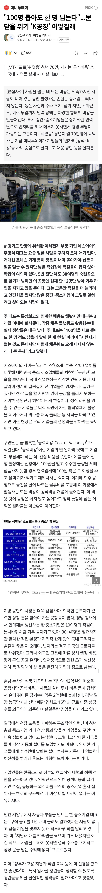
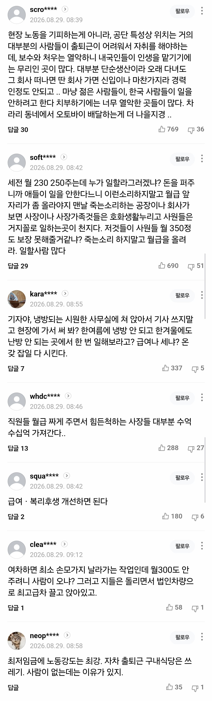

쉬면 뭐가 달라지냐, 쉬었음 할 바엔 좆소라도 가라
대학은 눈 낮춰서 가놓고 취업은 왜 눈 안 낮추냐
다 비빌 언덕이 있으니까 쉬었음 하는거다
vs
쉽게 말하지 마라. 좆소에 가보고는 하는 소리냐
최저임금, 외노자도 도망치는 3D 업무, 폭언이 난무하는 근무환경
거기 갈 바엔 시간이 걸리더라도 취준 더 하는게 낫다
출처 : https://naver.me/xrzNk7ow


쉬면 뭐가 달라지냐, 쉬었음 할 바엔 좆소라도 가라
대학은 눈 낮춰서 가놓고 취업은 왜 눈 안 낮추냐
다 비빌 언덕이 있으니까 쉬었음 하는거다
vs
쉽게 말하지 마라. 좆소에 가보고는 하는 소리냐
최저임금, 외노자도 도망치는 3D 업무, 폭언이 난무하는 근무환경
거기 갈 바엔 시간이 걸리더라도 취준 더 하는게 낫다
출처 : https://naver.me/xrzNk7ow
좃소는 단순히 급여가 적어서 좃소라 하는게 아닌데...
좃소를가라고?ㅋㅋㅋ
남동공단 황금기때 실습 주로 가던 사람인데
나이먹고서는 안간지 좀 됐지만
그때랑 달라지지 않은 환경이면 젊은사람들 갈 이유가 없음...;;
물가가 어마어마하게 올라서 숨만쉬어도 나가는돈이 미칠지경인데
그리고 이 물가가 어디로 영향이 가나면
예전엔 저 제조업으로 맡기던 사장이나 작업자들이
각자 자기가 발품 팔아서 해외로 직거래(?)하려고 접근하거나
최소수량으로도 받아준다는 곳들로 발길 다 돌림
그래서 요새 고인물 공장 사장님들이 살아남을라고
고수하던 작업스타일 홍보스타일 다 바꿔서 SNS로 많이들 소통하더라
안바뀌면 사람들 안감
돈을 많이주는게 문제가 아니라
하루 8시간 일하고 토일 정상적으로 쉬고싶을뿐인거임 지방 인프라? 오히려 인프라 박살나있어도 주거비 싸면 그게 더 이득이지
토요일 출근 안하는 좃소 공장을 본적이 없다.
토욜 출근만 안하게 해줘도 다닐 수 있을듯
나는 좃소인데 토욜 출근안하는데? 하는 애들은 사무직이거나, 상시 토욜 근무가 아니고 종종 가끔씩 토욜근무 하는 놈들이 그렇게 말함.
1년 중에 토욜을 아예 회사를 안가는게 토욜 근무 안하는거임
ㅇㄱㄹㅇ
아예 토요 근무 안하는곳을 못 봄
우리나라 대학을 너무 많이 가긴하네.
저기서 필요로 하는 사람은 고졸 or 초대졸인데 다 대학을 가버리니 뽑을 사람이 없지
고졸 초대졸도 쿠팡가지 저기는 안간다는거임
100명이나 뽑았는데 그게 다 눈높은 대졸이겠음?
한명남는건 다 이유가 있다는거임
그건 맞즤
방심하면 손목아지 날아가는 열악한 공장일 수도 있잖아
차라리 도시에서 배달하거나
삼성공장 짓는 현장에서 일하는게 나을거 같아
니가 말한 다른 예시들도 방심하면 손목아지 날아가는 경우보다 더한 상황이 발생 할 수도 있을 것 같은데....
손목아지가 아니라 말그대로 목이 날라간다니깐? 산업재해같은거 보면 2인1조인데 돈아깝다고 한명 밀어넣다가 죽고그럼
특성화고 출신들도 3개월 내에 퇴사한다는데? 아무것도 모르는 19살 20살 애들 제리고와도 나가는거면ㅋㅋ걍 말을 아낄게
난 출장 존나 다니는데
현장 가보면 중소도 깔끔한 가공공장이나 입지 여건좋은데는 그냥 젊은 사람도 많음
근데 대부분 존나 더럽고 시끄럽고 춥고 덥게 일해야 하는 환경에서는 60먹은 할아버지나 외국인뿐인
그런곳은 강소기업이긴해ㅋㅋ
저런곳 특징은 보통 외진 곳에 있고 주 6일 기본깔고가는데
돈도 시급으로 따지면 사실상 최저급이거나 좆괄로 적게 주는데 자취비 or 출퇴근 시간 및 비용 따지면 걍 ㅄ되니까 ㅌㅌ하는거지
돈을 너무 적게줘서 안가는데, 저런 저부가제조업이 돈을 많이 줄 수도 없음. 그럼 저런 공장 다 망해야되나? 또 그건 안되지. 그럼 어떻게 해야하나? 반도체 등 이윤많이 남는 산업에서 세금 걷어서 저런데 퍼붓는수밖에 없음.
프레스 씹ㅋㅋㅋ 괭이부리말 아이들같은 소설에 팔날라간 사람 나오는 이유가 프레스인데 ㅆㅂ ㅋㅋ
ㅈㄴ 허름한 공장단지 좆소도 직원들 최저시급에 중고차 타고다니는데 사장은 람보에 아우디에 지바겐에 차3대씩 끌고다니더라ㅋㅋㅋㅋ 10년전일인데 지금도 비슷할거같음
1. 최저임금 기준 ㅈ괄 적용한 임금.
2. ㅈ괄 적용되었다고 잔업을 기본으로 깔고가는 근무시간
이거 2개만이라도 좀 개선해봐
번외로 잔업많음으로 홍보하는곳도 존재함 ㅋㅋ
사람을 사람같이 대우 안해주면 망해야지 ㅋㅋ
세전 250주고 매년 평균 5만원 이렇게 오른다쳐도
10년일해야 세전300인데 2036년에 세전으로 300만원?
응~ 비빌언덕
대중교통 1시간 이내 출퇴근 가능 상근 (9-6) 기준 세후 250을 기준으로 잡고
공단 위치 - 세후 50추가 (300)
현장일 - 세후 50 추가 (350)
잔업/ 토요근무 (상시가 아닌 간혹) - 세후 50추가 (400)
교대 (2교대- 1.5배), 3교대 (1.2배)
이렇게 줘야 젊은 사람은 가지 싶습니다
공단에 현장일에 커리어에 발전도 없고 복리후생도 그저그렇다면 다 돈으로 보상해줘야하는게 맞다고 봅니다
대표들 차량 법인리스하고 접대비 처리하는거 줄이고 월급으로 돌리면 충분히 가능하다고 봅니다
물론 영세한 기업들은 어렵겠지만
사람이 부족해서 난리라고 할 정도면 저정도는 줘야한다고 봅니다
좋은 사람을 고용하고 싶으면 좋은 회사가 되면 됩니다
하다못해 적어도 출퇴근차량에 기름값지원이라도 해주던가 아님 1인1실 기숙사라도 지원해주시던가..
돈도 그렇고 워라밸도 그렇고 둘 다 만족해야되는데 둘중에 하나 혹은 둘다 박살난데가 대부분임
사람없다 징징대는 공장도 폐업 전까지 사장들은 차 몇대씩 사서 끌고다니더라 ㅋㅋㅋㅋㅋ
막상 직원들은 다마스 타고다니는데말이지 ㅋㅋㅋㅋ
정시출근 정시퇴근 토,일,법정공휴일 휴식
세후 250에 식사 제공 정도만 해도
저중 90%는 구인 끝날껄?
100명 뽑아서 1명 남으면 일하는 사람이 문제겠냐 회사가 문제겠냐 답이 뻔히 보이는걸
돈은 거짓말 안하지
임금이 높기라도하면 동결 괜찮지... 낮은데 동결임 ㅋㅋㅋㅋ
2017년에 좆소 초봉 2400 > 20년다녀야 5000만원, 주6일
좆견 3400시작 10년도 안되서 20년 채운것 보다 높음 주5일
최악으론 신입한테 임금역전 당하는 좃소도 존재한다는 거임
편돌이보다 딱히 돈차이도 없는데 업무강도가 넘사고 주말출근에 수당도 포괄로 퉁처버리는데 누가 가냐고 ㅋㅋㅋ
웃긴게 매출 20억 이러는데 10명 중에 한 6~7명은
토요일까지 출근 시키고 주6일 일한 최저로 줄듯 ㅋㅋㅋㅋㅋ
걍 돈을 존나 주면 다 자기가 하려고 하지
현대만 봐도 걍 돈 ㅈㄴ 주니까 경쟁 ㅈㄴ 치열하잖아
의외로 월급'만' 적은거면 사람들이 거부하지 않는다
월급마저 적으니까 안가는거지
개 ㅈ소보다 군대 병장이 더나음
왜기는 월급이나 복지나 뭐하나 만족스러운게 없어서겠지
박봉인데 위험하기까지 하니까
좃소 사장이 대우를 해줬으면 사람들이 나갔을까?
둘 다 맞는말이긴 함
딜레마지 뭐
돈많이줘야가지
일상생활은
가능해야 하는거 아니냐?
돈, 사람, 근무환경 셋중에 하나만 좋아도 남을 사람이 간간히 생김
여긴 사람도 좆같고 일하는것도 좆같은데 돈많이 주니까 참는다
일은 힘들고 돈도 많이 안주지만 사람들이 좋아서 다닌다
돈도 적고 사람들도 좆같은데 워라밸이 좋아서 다닌다
이런 인간들 적지않게 있는데
사람이 안구해진다?
돈도 적고 사람도 좆같고 근무환경도 병신인거임
개좆소를 왜감 그냥 쉬어 ㅋㅋㅋ
시간낭비 감정낭비 돈낭비 뭐 하나 남는게 없는데 쉬는개 더 나음
애초에 쉬었음이 저런공장 안가는 이유가 저런공장떄문에 쉬었음청년 생겨서 저런곳 더더욱 안가는거 아님?
통계상으로 쉬었음 청년들 ㅈ소 다니다가 고생 존나해서 퇴사한사람이 비중 많을텐데
마른 걸레 쥐어짜다가 대가 끊기는구나
개좆소 공장에서 지인이랑 사업하기 전에 일 배운다고 잠깐 있어봤는데 그냥 8-90년대에 머무르고 있다 봐도 됨. 나야 목적이 있어서 버틴거지만 가장 힘든게 사람들임. 나랑 같은 시대나 나라에서 사는 사람이 아니다. 그냥 야만의 시대에서 멈춰있음. 후진국에서 일하는 거면 원래 얘들 이렇다 생각할텐데 이게? 2020년대 한국인? 이란 생각만 듦. 공장이 ㅂㅅ인건 사장이 하는 짓을 보면 바로 알 수 있고 맨날 돈없다 징징대는데 알아서 잘챙기는지 인터넷에 도는 다른 데 처럼 외자차 법인 이런건 못 해도 집 한 채는 사고 그러더라ㅋㅋ